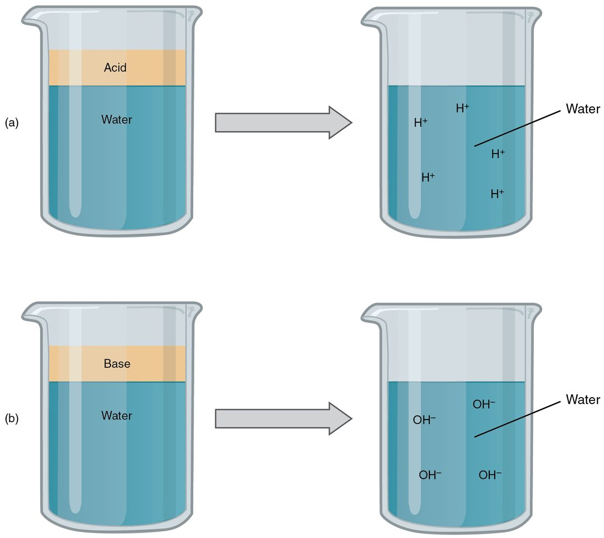

Few numbers in your body are held as tightly as the pH of your blood. This page explains acids, bases, the pH scale and buffers from the ground up: what makes a substance an acid or a base, how to read a pH value and why each step on the scale is a tenfold change, what normal blood pH is and why small shifts matter, and how buffers, especially the carbonic acid–bicarbonate buffer, keep that number steady. Every later topic on breathing, the kidneys and blood chemistry builds on it.
Water splits, just a little
Start with a glass of pure water. At any moment, a tiny fraction of its molecules have split into two ions: a hydrogen ion (H+), which you met in the atoms topic as a lone proton, and a hydroxide ion (OH−), an oxygen and a hydrogen carrying the extra electron.
H2O → H+ + OH−
The split runs backward just as easily: an H+ and an OH− that meet join straight back into water. In pure water the two ions are always present in equal numbers, and there are very few of them. The concentration of each is 0.0000001 mol/L, which is 10−7 mol/L, or about one split molecule for every 550 million whole ones.
Those few hydrogen ions matter out of all proportion to their number. A hydrogen ion is a bare proton with a full positive charge, and it attaches readily to anything with a negative or partly negative region. Everything else on this page is about how many of them a fluid holds.
Acids release hydrogen ions
Squeeze a lemon into a glass of water and the water tastes sour. The lemon juice has added hydrogen ions. An acid (acidus = sour) is a substance that releases hydrogen ions when it dissolves in water, raising the water's H+ concentration. Chemists call it a hydrogen ion donor.
Acids differ in how completely they let go:
- A strong acid releases nearly all of its hydrogen ions. Hydrogen chloride gas dissolved in water is the classic example: almost every unit splits into H+ and Cl−. The fluid your stomach makes owes its strength to it.
- A weak acid releases only a small share of its hydrogen ions and holds on to the rest. Most of its molecules stay whole at any moment. The acids in lemons and in vinegar are weak, and so is carbonic acid, the most important acid in your blood, which you will meet at the end of this page.
Strong and weak describe how much of the acid splits, not how much acid there is. A small amount of a strong acid can release more hydrogen ions than a large amount of a weak one.
Bases take up hydrogen ions
Baking soda fizzes when you add vinegar, and a spoonful of it in water can settle an upset stomach. Baking soda is a base. A base is a substance that takes up hydrogen ions, lowering a fluid's H+ concentration: a hydrogen ion acceptor. Bases are also called alkaline (from the Arabic al-qily, the ashes of burned plants, which were used to make soap).
Bases work in one of two ways:
- Some release hydroxide ions. Sodium hydroxide (NaOH), the base in drain cleaner, splits into Na+ and OH−, and each OH− takes up an H+ to form water.
- Some take up H+ directly. The bicarbonate ion, HCO3−, the active part of baking soda, is the most important base of this kind in your body. It picks up a hydrogen ion and becomes carbonic acid.
Like acids, bases are strong or weak. Sodium hydroxide is a strong base: nearly every unit splits. Bicarbonate is a weak base. Figure 1 sets the two families side by side.

Salts: what acids and bases leave behind
Mix hydrogen chloride dissolved in water, a strong acid, with sodium hydroxide in the right amounts and you get salty water:
HCl + NaOH → NaCl + H2O
The H+ from the acid and the OH− from the base join into water. The ions left over, Na+ and Cl−, make sodium chloride. This reaction is called neutralization, because the acid and base cancel each other out.
A salt is an ionic compound that separates in water into cations and anions other than H+ and OH−. Sodium chloride, potassium chloride and calcium chloride are all salts. Because they separate into ions, salts are electrolytes, and most of the electrolytes on a blood test come from dissolved salts. Many salts, such as sodium chloride, release neither H+ nor OH− of their own. Some salts contain an ion that is itself a weak base or a weak acid: baking soda, sodium bicarbonate, is a salt whose bicarbonate ion takes up H+.
| Acid | Base | Buffer | |
|---|---|---|---|
| What it does with H+ | Releases it | Takes it up | Takes it up or releases it, whichever opposes the change |
| Added to pure water, the pH | Falls | Rises | Stays close to where it started |
| Strong example | Hydrogen chloride dissolved in water | Sodium hydroxide | Not applicable: buffers are made of weak partners |
| Example in your blood | Carbonic acid (weak) | Bicarbonate (weak) | The carbonic acid–bicarbonate pair |
The pH scale
Hydrogen ion concentrations in your body are tiny and awkward to write. The H+ concentration of your blood is about 0.00000004 mol/L. Chemists solved this with the pH scale, a way of turning those tiny numbers into small, easy ones. The p stands for the German potenz, power, and H for hydrogen: pH tells you the power of ten of the hydrogen ion concentration.
pH = −log [H+], where [H+] is the hydrogen ion concentration in mol/L.
A log (logarithm) is the power you raise 10 to in order to get a number. The log of 1,000 (103) is 3; the log of 0.001 (10−3) is −3. The minus sign in the formula flips that negative power into a positive pH.
Worked example 1: from concentration to pH. A solution has an H+ concentration of 0.001 mol/L. What is its pH?
- Write the concentration as a power of ten: 0.001 = 10−3 mol/L.
- Take the log: log(10−3) = −3.
- Apply the minus sign: pH = −(−3) = 3.
- Check pure water the same way: [H+] = 10−7 mol/L, so pH = 7.
Three rules follow, and you will use them constantly (Figure 2):
- pH 7 is neutral: H+ and OH− are equal, as in pure water at 25 °C.
- Below 7 is acidic: more H+ than OH−. Above 7 is basic (alkaline): fewer H+ than OH−. Most fluids sit between 0 and 14.
- Lower pH means more hydrogen ions. Because of the minus sign, the scale runs backward: as [H+] rises, pH falls.

Each step is tenfold
Here is the idea that trips people up. Going from pH 7 to pH 6 is not a small step. The concentration goes from 10−7 to 10−6 mol/L, which is ten times more hydrogen ions. Each whole unit of pH is a factor of ten.
Worked example 2: comparing two pH values. The fluid in your stomach is about pH 2. How many times more hydrogen ions does it hold than a neutral fluid at pH 7?
- Find the difference in pH: 7 − 2 = 5 units.
- Each unit is a factor of 10, so five units is 10 × 10 × 10 × 10 × 10 = 105.
- Stomach fluid holds 100,000 times more hydrogen ions than the neutral fluid.
- Direction check: the lower pH is the more acidic fluid, so the stomach fluid is the one with more H+.
Blood pH values differ by fractions of a unit, so you need one more tool. Because log 2 is about 0.3, a fall of 0.3 pH units doubles the hydrogen ion concentration, and a rise of 0.3 halves it. It also helps to use a smaller unit: a nanomole (nmol) is one billionth of a mole, and 0.00000004 mol/L is 40 nmol/L.
Worked example 3: a change in blood pH. A patient's blood pH falls from 7.40 to 7.10. What happened to the hydrogen ion concentration?
- At pH 7.40, [H+] = 10−7.4 mol/L = 0.00000004 mol/L = 40 nmol/L.
- The change is 7.40 − 7.10 = 0.30 units, downward.
- A fall of 0.3 doubles [H+]: 40 × 2 = 80 nmol/L.
- So a change that looks like a small decimal, 0.3, means twice as many hydrogen ions in every liter of blood.
Figure 3 plots that relationship across the range your blood can survive. Notice that the curve is steeper on the acidic side: each 0.1 fall in pH adds more hydrogen ions than the one before.
Normal blood pH
The normal blood pH is 7.35 to 7.45, measured in blood from an artery. In hydrogen ion terms that is only about 35 to 45 nmol/L. Your blood is slightly basic, not neutral: it holds fewer hydrogen ions than pure water. Fluid inside your cells runs a little more acidic, around 7.2, and other fluids are far from 7.4 altogether. Stomach fluid can be near 2, and urine ranges from about 4.5 to 8.
Why does such a narrow range matter? The answer is protein shape, from the previous topic. Many side chains on your proteins carry a charge that depends on whether they hold a hydrogen ion. Add hydrogen ions and some negative side chains pick one up and lose their charge; remove them and some positive side chains give one up. Either way, the ionic bonds that hold the protein's fold are disturbed. Its shape shifts, and with it the protein's ability to carry, pump, signal or speed a reaction. Because almost every job in a cell is done by a protein, a pH change touches everything at once.
The range that people survive, even briefly, is roughly 6.8 to 7.8. Values beyond it are rarely compatible with life, and even changes within it cause serious illness.
Acidosis and alkalosis
A patient's blood test shows a pH of 7.28. That value is below the normal range, and the patient has an acid problem. The words for this come in pairs.
- Acidemia (-emia = blood condition) is blood pH below 7.35. Alkalemia is blood pH above 7.45. These words describe the measured state of the blood.
- Acidosis (-osis = condition, process) is a process that adds acid or removes base, pushing pH down. Alkalosis is a process that pushes pH up.
In everyday clinical speech the two pairs are often used interchangeably, and "the patient is in acidosis" usually means the blood pH is low. The distinction matters when two processes run at once and partly cancel: a person can have an acidosis with a normal pH.
The effects follow from which way the pH moves. Acidemia depresses the nervous system: confusion, drowsiness and, when severe, coma. It also weakens the heart's contractions. Alkalemia does the opposite to excitable tissue: signaling cells and muscles fire too easily, causing tingling around the mouth and in the fingers, cramps and muscle spasms, and it can disturb the heart's rhythm.
This is the short version. The topic on acid–base disorders, in the fluid balance chapter, returns to acidosis and alkalosis in full: what causes each kind and how your body compensates.
Buffers resist changes in pH
Add 1 mL of a strong acid solution (1 mol/L) to a liter of pure water. The water's H+ concentration jumps to about 0.001 mol/L, and its pH plunges from 7 to 3: ten thousand times more hydrogen ions. Add the same acid to a liter of blood in a living person, and the pH falls by only a few hundredths of a unit. The difference is that blood is buffered.
A buffer is a pair of substances that resists changes in pH: a weak acid and the weak base it becomes after releasing its hydrogen ion. The two partners handle trouble from either direction.
- When a strong acid adds H+, the weak base takes it up and becomes the weak acid. The strong acid's hydrogen ions end up held by a weak acid, which releases very few of them back.
- When a strong base removes H+, the weak acid releases H+ to replace it and becomes the weak base.
In short, a buffer swaps a strong acid or base for a weak one. The pH still moves, but far less than it would without the buffer.
Two limits keep buffers in perspective. First, a buffer does not remove acid from your body. It holds the extra hydrogen ions for the moment, and some other process has to get rid of them. Second, a buffer can be used up. Every hydrogen ion it takes up converts one unit of its weak base into the weak acid. Once the base runs low, further acid lowers the pH sharply.
The carbonic acid–bicarbonate buffer
The main buffer in your blood and the fluid around your cells is built from three linked substances: carbon dioxide, carbonic acid (H2CO3) and bicarbonate (HCO3−). Your cells produce carbon dioxide constantly as they break down fuel. In water, some of it joins water to form carbonic acid, and carbonic acid, a weak acid, releases a hydrogen ion to become bicarbonate:
CO2 + H2O ↔ H2CO3 ↔ H+ + HCO3−
The double arrows mean each step runs in both directions. Which way it runs depends on what is added or removed (Figure 4). A normal bicarbonate level in the blood is about 22 to 26 mmol/L, far more than the free hydrogen ions, which are measured in nanomoles. That large store of weak base, together with your lungs' ability to breathe away the carbon dioxide the buffer makes, is what makes the buffer so effective.
Worked example 4: tracing added acid through the buffer. During a hard sprint, working muscles release extra hydrogen ions into the blood. Follow them.
- The extra H+ meets bicarbonate: H+ + HCO3− → H2CO3. Bicarbonate goes down, carbonic acid goes up.
- Carbonic acid is weak, so it holds most of those hydrogen ions instead of releasing them. Free H+ rises only a little, and pH falls only a little.
- Carbonic acid splits into carbon dioxide and water: H2CO3 → CO2 + H2O.
- The lungs breathe the extra carbon dioxide out. The hydrogen ion is now part of an ordinary water molecule, so it no longer counts toward pH. Over the next hour or so, your liver and muscles use up the leftover products of the sprint as fuel. That takes hydrogen ions back up and restores the bicarbonate that was used. For acid that your body cannot burn as fuel, the kidneys replace bicarbonate, over hours to days.
Run it the other way for a strong base. Hydroxide ions take up hydrogen ions to form water, carbonic acid releases more H+ to replace them, and it becomes bicarbonate. Carbon dioxide from your cells then refills the carbonic acid.
What makes this buffer special is that both ends can be adjusted. Breathing sets how much carbon dioxide stays in your blood, and the kidneys set how much bicarbonate stays. The breathing and urinary chapters show how each one does it. Your body has other buffers too, and a later topic covers them alongside this one.
Putting it together
Acids release hydrogen ions and bases take them up; when they meet, they neutralize each other and leave a salt and water. pH is the negative log of the hydrogen ion concentration, so lower pH means more H+, each whole unit is tenfold and every 0.3 units is twofold. Blood is held at pH 7.35 to 7.45 because hydrogen ions change the charges that hold your proteins in shape. Below that range is acidemia, above it alkalemia. Buffers, a weak acid paired with its weak base, blunt pH changes, and the carbonic acid–bicarbonate buffer does most of that work in your blood, handing extra acid off as carbon dioxide you breathe out.